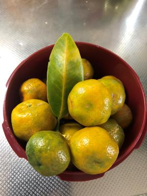
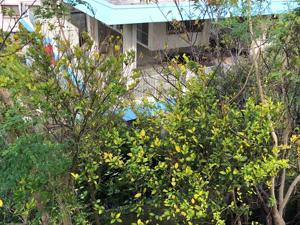
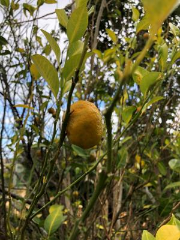

うるがいの話 ある日
最新: シークヮーサー【うるがいの話 ある日】とは 一日だけのプログです
『うるがいの話』の最新一日だけのプログで、通信料が少なく経済的だ。カニの画像をクリックすると全ての日付が載る『うるがいの話』サイトを表示します
|
|
【うるがいの話】 うるがい(ｳﾙｶﾞｲ urugai)とは、『もずくがに』の名前でとても大きくなります。 |
|---|---|
|
|
【カミマヤーの話】 猫のことを方言でマヤーといいます。カミマヤーとは、神の猫のことです。 |
|
【タナガーの話】 たながー（ﾀﾅｶﾞｰtanagaa）とは手長えびのことで、何種類かあり大きいのは車 エビぐらいになります。 |

|
【ぶながぁの話】 ぶながー(bunagaa)とは、赤い髪の毛、赤い身体、そして身長は１ｍ２０ｃｍ ぐらい、川の蟹を食べているの目撃された。場所は沖縄県国頭郡大宜味村のと ある村僕の隣近所に住んでいる爺さんから、聞いた話です。 |
|
|
【ギーマの話】 ギーマ(giima)とは、山原の里山に咲くスズランに似た、 花を付けます。実は食べられます、 気が付くと口の周りが紫になっています。 |
2021年12月18日 (土）シークヮーサー
16:51
 
庭になったシークヮーサーの実を採る。シークヮーサーの木は、カマキリ虫に
木に穴が空けられ葉っぱが紅葉しかたのように黄色になったいる。もう、だめ
かもしれない。隣り近所にあったシークヮーサーの木は全滅に近いほど枯れて
しまった。最後の収穫かもしれない、正月の鏡餅の飾りつけのミカンの代わり
を確保する。

朝ドラの録画を見ていたら『クリスマスに算太（サンタ）がやってきました』
おぇ、思わず笑う。朝ドラ７週目の録画、このナレーションために名前を決め
たのだろうか、作家って凄い。
パソコンをいじりながら、『NHKラジオ らじる☆らじる』でTHE ALFEE 終わら
ない歌の番組を聴いていたら、『桜井が経験した最も痛かった病気とは？』
それは『一度かかった尿路結石』と、ほほぉ、『便器に結石が出たので取ろう
としたら、自動的に水か出てきて取れなかった！』と汚い話ですがと前置きし
ながら話していた、クス、同じ経験をしている人がいる。
１６時４４分 ビットコインの総資産 ￥１５、２８３